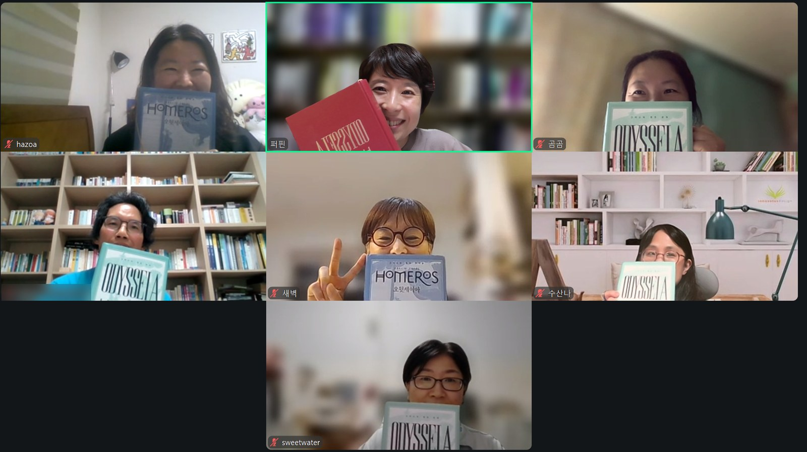

이름 없이 듣는
자기 노래
가인. 신에게 노래를 받아 잔치 자리에서 영웅들의 일을 부르던 사람. 그 노래 속 주인공이 이름 없는 손님으로 앉아 듣던 『오뒷세이아』 제7·8권을 함께 편 일요일 밤
안개 속의 손님
나우시카아가 먼저 도시로 돌아간다. 오뒷세우스는 조금 뒤에 따라 들어간다. 7권 15행, 아테나가 그의 둘레에 짙은 안개를 두른다. 낯선 사람들 눈에 띄지 않도록. 그는 문명이 가득 들어찬 도시의 풍경을 안전하게 구경하며 걷는다. 그를 보는 사람은 없다. 아직 아무도 그의 이름을 모른다.
아무도 그를 보지 못하게 감싼 이 안개를, 어떻게 보셨나요?
요즘 이런 호의를 입었다고 느낀 적이 있는지도 함께 물었다. 일이 잘 풀리거나 아찔한 순간을 무사히 비켜 갔을 때 사람들은 하늘이 도왔다고 말한다. 바다에 해무가 끼는 날이었을 수도 있다. 그 안개에 아테나의 이름을 붙이는 순간 한 사내의 무사한 걸음은 신과 가까운 영웅의 이야기가 된다.
안개는 사실 자연 현상으로 생겼을 수도 있잖아요. 해무가 끼고. 그걸 신의 이름을 빌려서 해석하는 것 같아요. 신이 나를 지켜주고 있다, 이게 믿음이잖아요.
— 디퍼님 · 7권 나눔
이번 두 권에서 아테나는 쉴 틈이 없다. 안개를 두른다. 물동이를 든 소녀의 모습으로 길을 일러 주고 사람들을 불러 모은다. 정작 오뒷세우스는 그 손길을 다 알아채지 못한 채 자기가 겪은 고생을 이야기한다.
아테나가 이래도 도와주고 저래도 도와주는데, 자기는 그 도움의 손길을 다 헤아리지 못하잖아요. 돌아보면 우리도 내가 기억하고 있는 것 이상으로 더 많이 받고 누렸겠다, 그런 생각을 했어요.
— 디퍼님 · 7권 나눔
재 위에 앉은 손님
길을 일러 준 소녀는 왕비 이야기를 해 준다. 알키노오스의 아내이고 백성이 신처럼 우러르는 사람. 6권 끝에서 나우시카아가 어머니의 무릎부터 잡으라고 일렀던 그 사람이다. 이름은 아레테.
파이아케스의 왕비. 이름이 ‘기도하다, 간청하다’라는 동사와 이어진다고 보아 ‘기도해서 얻은 아이’로 풀기도 한다. 그날은 귀로 들을 때 탁월함을 뜻하는 아레테와 겹쳐 들린다는 이야기와 함께 읽었다.
간청이라는 뜻을 품은 왕비의 무릎을 붙잡고 집으로 보내 달라 청할 때, 그 이름과 이 도시는 어떻게 다가왔나요?
오뒷세우스는 궁전에 들어가 아레테의 무릎을 잡고 고향으로 보내 달라고 청한다. 그러고는 화로 곁 재 속에 앉는다. 7권 153행이다. 늙은 에케네오스가 손님을 일으키라고 말하자 알키노오스가 그를 아들의 자리에 앉힌다. 재 속에 앉는 모습이 눈에 잘 그려지지 않는다는 말에서 이야기가 시작됐다. 재를 뒤집어쓰고 뉘우치던 옛 이야기가 겹쳐졌다. 8권에는 경기가 이어진다. 『일리아스』에서는 장례를 치른 뒤에 경기를 연다. 지난번에는 바다를 건너 다시 태어나는 오뒷세우스를 읽었다. 이번에는 그 탄생 곁에 장례의 자리가 포개진다. 화로의 재가 죽음을 가리키는지도 모른다.
재 위의 손님은 이윽고 배가 고프다고 말한다. 배만큼 염치없는 것이 없다면서.
하지만 내가 아무리 괴롭더라도 지금은 저녁을 먹게 해 주시오.제7권 215행
장사하는 사람 같지, 경기하는 사람 같지 않아 하면서 놀리고, 거기서 원반 날리고. 고전이라고 하면 어렵다고만 생각했는데, 이런 장면들이 이렇게 재밌는 줄은 몰랐어요.
— 디퍼님 · 7–8권 나눔
웃기면서도 슬픈 대목이라는 말이 이어졌다. 그토록 이름난 사람이 체면을 내려놓고 밥부터 청한다. 아무리 영웅이고 아무리 고상해도 신처럼 이슬만 먹고 살 수는 없다. 밥을 먹어야 힘이 난다. 그 장면이 책에 남아 있다는 데 오래 머물렀다.
두 샘이 흐르는 도시
알키노오스의 궁전에는 사철 열매가 지지 않는 과수원이 있다. 배, 석류, 사과, 무화과, 올리브. 7권 129행에는 샘이 두 개 나온다. 하나는 정원을 적시며 흐른다. 다른 하나는 궁전 쪽으로 흘러 백성이 물을 긷는다.
이 도시에 샘이 두 개 흐른다는 데에는 어떤 뜻이 담겨 있을까?
샘을 품은 곳과 샘 없이 떠도는 곳은 다르다. 끊이지 않고 풍요를 이어 주는 샘이 있는 자리. 그 풍요가 환대의 가장 기본이 되는 조건이라는 생각이 이어졌다. 같은 시간 이타케에서는 구혼자들이 주인 없는 집의 살림을 먹어 치우고 있다.
환대라는 단어가 처음부터 계속 키워드라고 생각해 왔어요. 그런데 조건이 아무리 좋다고 해서 반드시 모든 사람에게 환대를 할 수 있을까. 고향에서는 지금 정반대의 일이 일어나고 있잖아요.
— 디퍼님 · 7권 나눔
물은 생명수다. 두 샘을 다툼 없는 낙원의 표시로 읽은 말이 있었다. 하나는 왕궁으로, 하나는 백성에게로 간다. 권력이 가두어 두지 않고 저절로 나뉜다. 이 사람들은 나그네를 먹이고 배웅하는 데서 그치지 않는다. 집까지 데려다준다. 그 일을 기쁘게 맡는 데서 이 사람들의 힘을 보았다. 그게 이 나라의 명예라는 말이었다.
사위가 되어 달라 붙잡을 만큼 좋은 곳인데, 왜 그를 곧장 이타케로 보내지 않고 이곳을 거쳐 가게 했을까?
그날 함께 붙든 물음이다. 아무도 아닌 채로 지내던 사람이 처음 자기 자신을 찾아가는 곳일 수도 있다. 일곱 해를 칼립소의 섬에 있었으니 바깥세상 소식을 듣게 하려는 뜻일 수도 있다. 물음과 함께 그런 짐작이 나왔다.
오뒷세우스는 한 번 죽은 사람이잖아요. 다시 삶으로 돌아오는 게 한 번에 짠 하고 살아나는 게 아니라, 여기 가서 조금 더 얻고 저기 가서 조금 더 생명을 얻고. 너 이제 너의 자리로 돌아가도 좋아, 그 길을 알려줄게. 그런 안배가 아니었을까요.
— 디퍼님 · 7–8권 나눔
뗏목에서 곧장 고향에 닿았다면 기력이 남지 않았을 거라는 말도 있었다. 이곳 사람들은 무조건 보내 주지 않는다. 누구인지, 어디서 왔는지 묻는다. 경기에 불러내는 일도 그가 누구였는지 스스로 알게 하는 시험으로 읽혔다. 에우뤼알로스가 경기와는 거리가 먼 장사꾼 같다고 모욕하자 오뒷세우스는 대꾸 대신 남들 것보다 큰 원반을 집어 가장 멀리 던진다.
눈 대신 받은 노래
잔치에는 눈먼 가인 데모도코스가 있다. 가인은 잔치 자리에서 영웅들의 일을 노래로 불러 들려주는 사람이다. 사람들은 그를 업신여기지 않는다. 자리를 내어 주고 귀하게 모신다.
파이아케스의 잔치에서 노래하는 눈먼 가인. 무사 여신이 그의 눈을 빼앗고 노래를 주었다. 그날은 이 사람이 잃은 눈과 받은 노래를 나란히 놓고 읽었다.
무사 여신은 누구보다도 그를 사랑하시어 좋은 것과 나쁜 것 두 가지를 주셨으니, 그에게서 시력을 빼앗고 달콤한 노래의 재능을 주신 것이다.제8권 64행 무렵
누구보다 사랑한다면서 무사 여신은 왜 좋은 것과 나쁜 것을 함께 주었을까?
누구보다 가인을 사랑하면 좋은 것만 주지, 왜 두 가지를 주냐. 그런데 다 잘하는 것보다 결함이 있으면서 한쪽을 아주 잘하면, 그게 신의 사랑을 받는 사람인가 하는 생각이 들었어요.
— 디퍼님 · 8권 나눔
보이지 않으면 남은 감각이 예민해진다는 이야기가 이어졌다. 긴 노래를 외워서 부른다는 것이 노력만으로 되는 일은 아닐 거라는 말이었다. 『오뒷세이아』의 첫 행이 무사 여신을 부르며 시작한다는 데 생각이 닿은 말도 있었다. 가인은 무사 여신이 들려주고 싶은 노래를 대신 부르는 사람이다. 여신만을 향해 노래하려면 다른 것은 지워져야 했을지 모른다. 좋은 것과 나쁜 것을 함께 받아야 자기가 받은 것이 좋은 것인 줄 안다는 말이 그 곁에 놓였다.
모자람 하나 없는 파이아케스에서 사위로 살 수도 있다. 그런데 그는 울면서 이타케로 가려 한다. 좋은 것과 나쁜 것이 함께 놓인 자리를 두고 우리 삶을 다시 보았다.
키잡이 없는 배
8권 끝, 알키노오스는 손님에게 이름을 말해 달라고 청한다. 550행이다. 이어서 그를 태워 보낼 자기 나라의 배를 자랑한다.
…키잡이가 없고, 다른 배들이 갖추고 다니는 것과 같은 키도 없으며, 우리 배들은 스스로 사람들의 생각과 마음을 알고 있지요.제8권, 알키노오스의 말
키도 키잡이도 없이 사람의 마음을 알아 데려다주는 배를, 어떻게 보셨나요?
뗏목에 매달려 떠내려오던 사람이 이 배를 타고 돌아간다. 열두 왕이 선물을 내어 그는 빈손으로 돌아가지 않는다. 지나지 않아도 될 땅에 들렀다 가는 길이다. 모욕을 듣고 울기도 한 이 우회에도 뜻이 있으리라는 물음이 함께 놓였다. 580행에서 알키노오스는 신들이 트로이아의 파멸을 정한 까닭을 후세 사람들에게 노래가 남게 하려는 데서 찾는다. 자기 노래를 낯선 자리에서 듣는 사람. 처음에 그를 감싸 준 안개는 다르게 보면 아무도 그를 알아보지 못한다는 뜻이기도 하다.
집으로 데려다주는 힘은 배에도 키잡이에도 있지 않다는 말이 이어졌다. 키를 잡고 목적지가 뚜렷해도 사람의 뜻만으로는 닿지 못한다. 신이 이루든 내버려 두든 그 뜻에 맡기겠다는 알키노오스의 말(570행)을 함께 읽었다. 헤카톰베를 바치며 신과 한 식탁에 앉는 이 나라를 에덴동산에 견준 말도 있었다. 자기 지략을 믿고 동료를 이끌던 사람이 모든 것을 신에게 맡기는 정반대의 나라에 닿았다는 말도 있었다. 여기서 채운 것이 물질만은 아니었을 거라는 생각이었다. 재 위에 앉아 있던 손님이 원반을 던지고 나서 자기가 어떤 사람인지 스스로 드러낸다. 자기가 누구인지 다시 세우는 곳으로 이 나라를 읽었다.
다 놓았을 때 가고 싶었던 곳이 어딘가 생각해 보면, 명예도 아니고 재산도 아니고, 그냥 내가 있었던 곳에 돌아가고 싶었던 게 아닌가. 그래서 이게 굉장히 마음에 남는 구절이에요.
— 디퍼님 · 8권 나눔
7권과 8권에는 거듭 나오는 한 구절이 있다.
내 가슴속 마음이 명령하는 바제7·8권에 거듭 나오는 말
마음이 명령하는 바를 찾아가 다시 확인하고 조금 더 단단해져 돌아갈 수 있는 곳. 아테나가 그를 이 나라로 이끈 까닭을 그렇게 읽었다.
스스로 청한 노래
8권에서 데모도코스는 세 번 노래한다. 첫 노래는 오뒷세우스와 아킬레우스의 다툼이다. 오뒷세우스는 자줏빛 외투로 얼굴을 가리고 운다. 알아챈 사람은 알키노오스 하나다. 두 번째는 아레스와 아프로디테, 헤파이스토스의 그물 이야기. 앞의 두 노래는 가인이 골랐다. 세 번째 노래만 오뒷세우스가 직접 청한다. 목마의 구조에 관해 노래해 달라고.
이 노래를 청하는 오뒷세우스의 가슴속에서 마음이 명령한 것은 무엇이었을까?
노래는 목마의 「구조」를 청하며 시작한다. 목마가 어떻게 생겼고 몇 사람이 들어갔는지를 노래할 것 같지만, 노래는 목마를 두고 트로이아 사람들이 세운 세 가지 계획으로 흘러간다. 다른 번역도 펴 봐야겠다는 말이 뒤따랐다. 오뒷세우스가 뜻하지 않은 선택들이 그 자리에 놓인다. 그렇게 벌어진 일이 그 뒤로도 노래가 된다.
노래가 이어지자 그는 다시 운다. 시인은 그 울음을, 도시가 함락될 때 쓰러진 남편 위에 엎드려 우는 여인에 견준다. 523행부터 531행까지 그 여인의 모습이 길게 그려진다.
눈물을 왜 흘리냐 생각해 보면, 후회라기보다도 그걸 되새기면서 흘리는 참회의 눈물 같다는 느낌이 들었어요. 회복을 찾아가는 단계라면, 본인이 했던 과업에 대해서도 그런 과정이 필요하지 않았을까요.
— 디퍼님 · 8권 나눔
승리만 생각했을지 모르는 사람이 자기가 가져온 비극 앞에서 다시 괴로워한다. 눈물 흘릴 수 있는 영웅이어서 신의 마음을 움직인 것은 아닐까 하는 말이 있었다.
전쟁터에서 영웅담으로 듣던 이야기를 가인의 노래로 다시 들으니 새롭게 마음에 닿았을 거라는 말이 있었다. 다른 사람들은 그 전쟁을 어떻게 볼지 듣고 싶었을 수도 있다. 노래를 들으며 쓰러진 여인의 고통까지 느끼면서 자기도 죽을 수밖에 없는 인간임을 알았으리라는 생각이었다.
이 고통이 자기 고통으로 느껴지면서, 자기가 받는 모든 고통에 대해서 억울하거나 이런 게 아니었을 것 같아요. 진짜 사람으로 거듭나지 않을까. 영웅이 아니라 한 인간으로 거듭나는 게 아닐까 생각합니다.
— 디퍼님 · 8권 나눔
497행에서 오뒷세우스는 가인에게 신이 그대에게 신적인 노래를 주었다고 말한다.
자기한테 제일 빛나는 공적인데, 그 공적이 그냥 자기가 정말 잘나서가 아니라 결국에는 신의 도움이다. 저는 그 부분에서 오뒷세우스가 깨달았다는 생각이 들어요. 많은 사람들의 도움과 보이지 않는 손길이 다 같이 합쳐져서 이루어지는 일이라고.
— 디퍼님 · 8권 나눔
신은 사람이 보지 못하는 너머를 본다. 사람은 승리를 본다. 그 이면의 아픔은 잘 보지 못한다.
노래가 멈춘 자리에서 알키노오스가 이름을 묻는다. 안개 속을 아무도 모르게 걷던 손님이 이제 이름을 말할 차례다. 그 물음 앞에서 각자 한마디씩 남겼다.
오늘 듣는 내내 회복 탄력성이라는 단어가 계속 생각났어요. 고통에서 벗어나는 건 혼자만으로는 어렵고, 누군가의 이야기와 도움이 있어야 하는 것 같아요.
— 디퍼님 · 닫는 나눔
뭔가를 이루고 나면 내 계획과 의지로 했다고 생각하는데, 우리 눈에 보이지 않는 도움이 분명히 있었다는 생각이 들어요. 그렇다고 의지나 계획이 다 필요 없는 건 결코 아니거든요. 가만히 있는 게 아니라 이런 토론도 열심히 하면서 더 치열하게 힘을 길러야겠다는 생각을 다시 합니다.
— 디퍼님 · 닫는 나눔
벗은 채로 도착해서 재 위에 앉아 밥 좀 먹게 해 달라 하고, 가인의 노래를 들으며 뜨거운 눈물을 흘리고. 가장 낮아지는 자리를 통과해서 다시 태어나 본향으로 돌아가는 게 아닌가 싶어요.
— 디퍼님 · 닫는 나눔
안개가 오뒷세우스를 감추기도 했지만, 신과 같은 이 나라를 자세히 볼 수 있게 해 준 것 같아요. 그 앞에서 자신의 약함과 한계를 발견하면서 더 단단해진 인간으로 거듭날 수 있는 자리였던 것 같아요.
— 디퍼님 · 닫는 나눔
아이 하나를 키우려면 온 마을이 필요하다는 것처럼, 오뒷세우스 하나를 키우기 위해서는 이 많은 신들의 다정한 손길이 필요했나 봅니다.
— 디퍼님 · 닫는 나눔
안개 속에 왜 감췄나 생각해 보니, 본인은 정말 아무것도 아닌 인간이라는 걸 철저하게 알려 준 것 같아요. 아무도 못 알아보는 곳에서 밥까지 빌어먹어야 하는 낮은 자의 마음도 이해하게 하고요.
— 디퍼님 · 닫는 나눔
